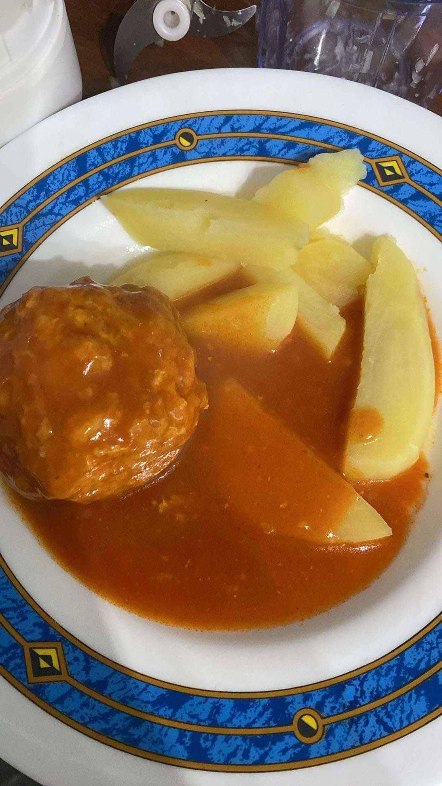
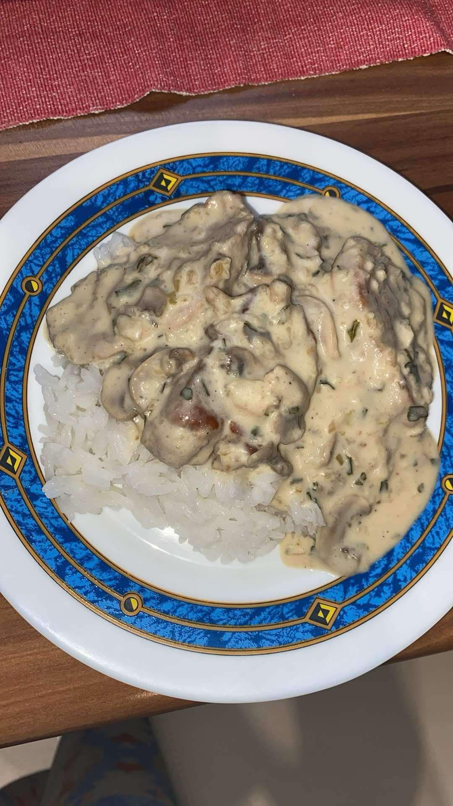

Receptek
Paradicsomos húsgombóc

Hozzávalók:
- 1 db kisebb vöröshagyma
- 60 dkg darált hús (sertés vagy marha)
- 1 bögre rizs
- 1 db tojás
- só, ízlés szerint
- bors, ízlés szerint
- 1 db leveskocka
- 20 dkg paradicsompüré
- 1 evőkanál olaj
- 2 evőkanál liszt
- 2 evőkanál cukor
Elkészítés:
- A paradicsomos húsgombóc elkészítéséhez a megtisztított, felaprított hagymát a darált húshoz keverjük.
- Hozzáadjuk a rizst és a tojást, majd ízlés szerint sózzuk, borsozzuk. Összegyúrjuk, hogy formázható masszát kapjunk. Pihentetjük.
- Egy nagyobb lábasban kb. 2 litert vizet forralunk, majd beledobjuk a leveskockát. Sózzuk, borsozzuk, ha szükséges. Amikor feloldódott a leveskocka, hozzáadjuk a paradicsompürét. Elkeverjük és visszaforraljuk.
- A darált húsos masszából kézzel kisebb alma nagyságú gombócokat formázunk, és a lábasba tesszük őket. Közepes lángon, lefedve kb. 1 órán keresztül főzzük. Nem kell nagyon forrnia! Szükség szerint a főzőlevet pótoljuk egy kevés vízzel, mert főzés közben a gombócok szépen megdagadnak. Végül kivesszük őket, és félretesszük.
- Tepsibe öntjük az olajat, és a liszttel rántást készítünk. Néhány kanálnyi paradicsomos főzőlével fellazítjuk, simára keverjük, majd a többi főzőléhez öntjük. Felfőzzük, a cukorral, valamint ízlés szerint sóval ízesítjük.
- Visszatesszük a besűrített paradicsomszószba a húsgombócokat, és további 2 percig főzzük.
- Tányérokba szedjük, és főtt krumplival kínálhatjuk.
Gombás szűzérme

Hozzávalók:
- 4 szelet szűzérme
- 1 nagy fej gomba (csiperke vagy erdei gomba)
- 1 evőkanál olaj
- 1 evőkanál vaj
- 2 gerezd fokhagyma
- 1 dl fehérbor (opcionális, de ízesíti)
- 100 ml tejszín
- Friss petrezselyem
- só, bors, ízlés szerint
- 1 evőkanál mustár (opcionális)
- 1 evőkanál liszt
Elkészítés:
- A szűzérme szeleteket sózzuk, borsozzuk, és egy serpenyőben forró olajon mindkét oldalát kb. 4-5 percig pirítjuk. Az ideális, ha a hús kívül aranybarna, belül pedig szaftos marad. Miután elkészült, vegyük ki a húsokat és tartsuk melegen.
- A serpenyőben lévő húslevet felhasználva adjunk hozzá egy evőkanál vajat. Erre tegyük rá a felaprított gombát, és pirítsuk meg, amíg a gomba meg nem puhul és a leve el nem párolog.
- Ha szükséges, egy evőkanál liszttel sűrítsük a szószt, majd öntsük fel fehérborral. Hagyjuk, hogy a bor egy kicsit elpárologjon, majd adjuk hozzá a tejszínt és keverjük simára. A szószt ízesíthetjük egy kis mustárral, hogy pikánsabb legyen.
- A szűzérmét tegyük vissza a serpenyőbe a gombás szószba, és hagyjuk, hogy még pár percig összeforrjon, így a hús átveszi a gombás ízeket.
- Friss petrezselyemmel megszórva, és esetleg rizs vagy burgonya körettel tálaljuk.